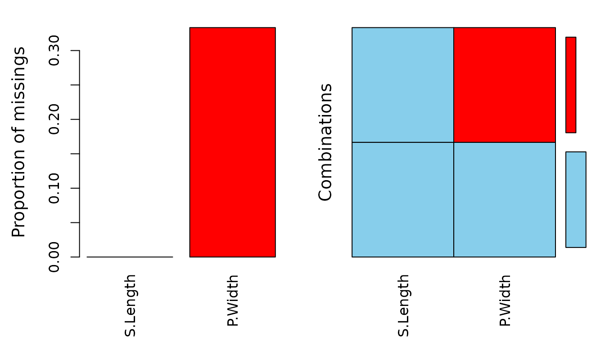
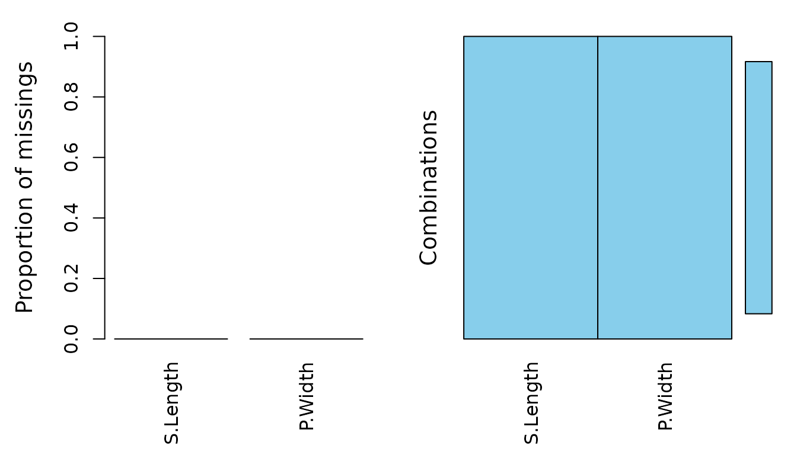

Imputation Method based on Iterative EM PCA
Birgit Karlhuber
2024-07-08
Source:vignettes/impPCA.Rmd
impPCA.RmdThis vignette showcases the function impPCA(), which can
be used to impute missing values with the help of a greedy algorithm for
EM-PCA including robust methods.
Data
The following example demonstrates the functionality of
impPCA() using a subset of sleep. The columns
have been selected deliberately to include some interactions between the
missing values
library(VIM)
data(iris)
df <- iris[1:30,c(1,4)]
colnames(df) <- c("S.Length", "P.Width") # select two numerical variables
df_na <- df
# randomly produce some missing values in the column P.Width
set.seed(1)
nbr_missing <- 10
index_na <- sample(nrow(df_na),size = nbr_missing,replace = T)
index_na <- index_na[!duplicated(index_na)]
df_na[index_na,2] <- NA
w <- is.na(df_na$`P.Width`)
aggr(df_na)
Imputation
By setting method to “mcd” the robust estimation is used (instead of the default “classical”). With boot=FALSE imputed data set would be a data.frame else (boot=TRUE) it is a list where each list element contains a data.frame.

The plot shows that all missing values of the variable
P.Width were imputed by the impPCA()
function.
Performance of method
In the next plot the non-missing data points, the ones set to missing and the associated imputed values are visualized. Furthermore the MAPE short for Mean Absolute Percentage Error and the NRMSE short for Normalized Root Mean Squared Error are visualized in the plot.
# create plot
plot(`P.Width` ~ `S.Length`, data = df, type = "n", ylab = "P.Width", xlab="S.Length")
mtext(text = "impPCA robust", side = 3)
points(df$`S.Length`[!w], df$`P.Width`[!w])
points(df$`S.Length`[w], df$`P.Width`[w], col = "grey", pch = 17)
points(imputed$`S.Length`[w], imputed$`P.Width`[w], col = "red", pch = 20, cex = 1.4)
segments(x0 = df$`S.Length`[w], x1 = imputed$`S.Length`[w], y0 = df$`P.Width`[w],
y1 = imputed$`P.Width`[w], lty = 2, col = "grey")
legend("topleft", legend = c("non-missings", "set to missing", "imputed values"),
pch = c(1,17,20), col = c("black","grey","red"), cex = 0.7)
mape <- round(100* 1/sum(is.na(df_na$`P.Width`)) * sum(abs((df$`P.Width` -
imputed$`P.Width`) / df$`P.Width`)), 2)
s2 <- var(df$`P.Width`)
nrmse <- round(sqrt(1/sum(is.na(df_na$`P.Width`)) * sum(abs((df$`P.Width` -
imputed$`P.Width`) / s2))), 2)
text(x = 5.6, y = 0.16, labels = paste("MAPE =", mape))
text(x = 5.6, y = 0.12, labels = paste("NRMSE =", nrmse))